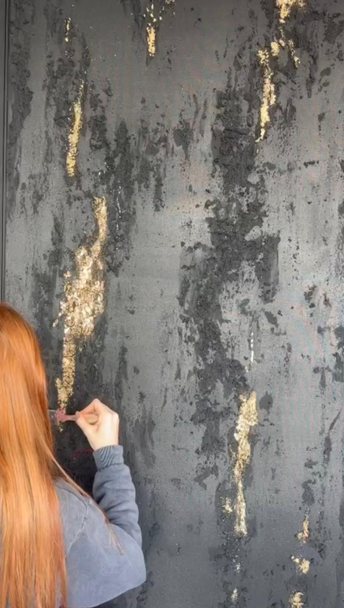
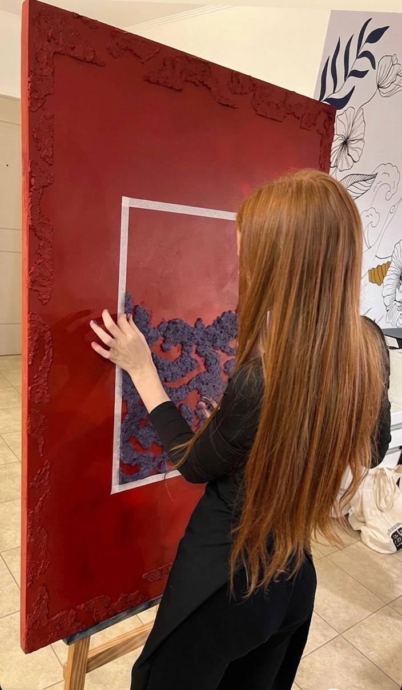
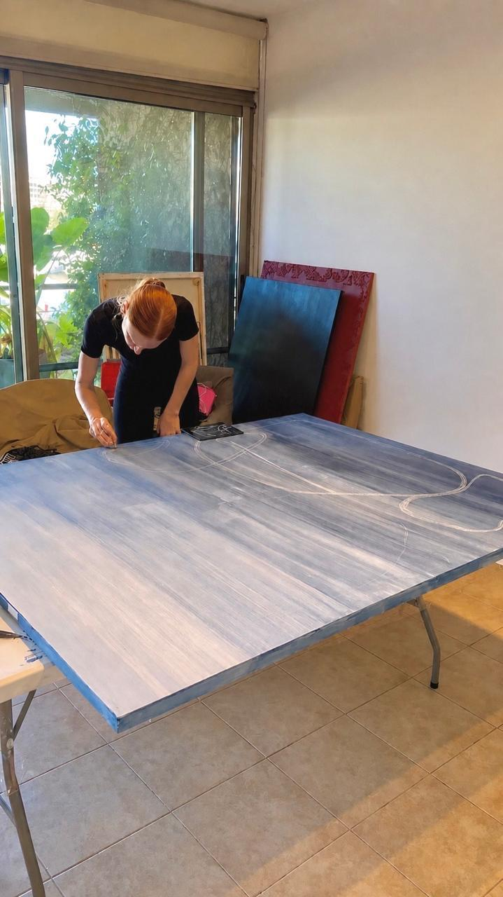

Sobre mí
Sofía Juarros
Soy artista visual y trabajo en mi taller de Buenos Aires. Pinto obra abstracta donde la textura, el relieve y el pan de oro son tan importantes como el color.
Cada obra se construye a mano, capa por capa, y está pensada para convivir con el espacio que la recibe.

“Me interesa lo que se puede tocar: la materia, la grieta, la luz que cambia sobre una superficie.”
El proceso
Del taller a tu pared
Trabajo en formatos grandes, muchas veces directamente sobre la mesa o el caballete. Primero preparo la superficie y la textura; después llegan el color, el gesto y, a veces, el oro.


Creemos una obra para vos
Contame sobre tu espacio y empezamos.
Ver cómo funciona